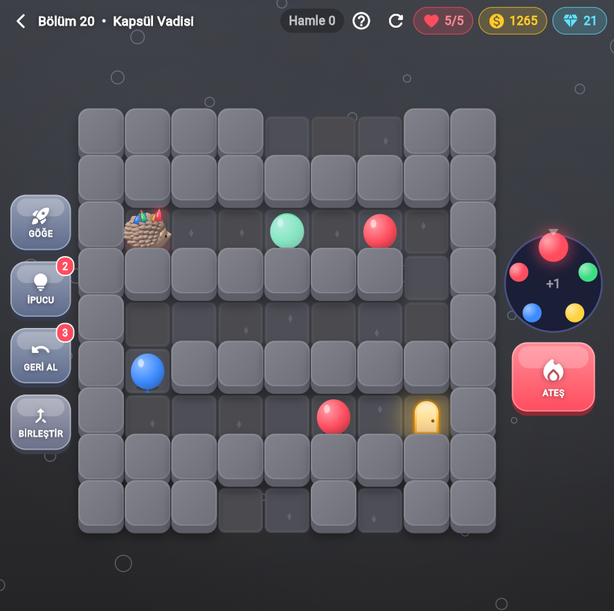
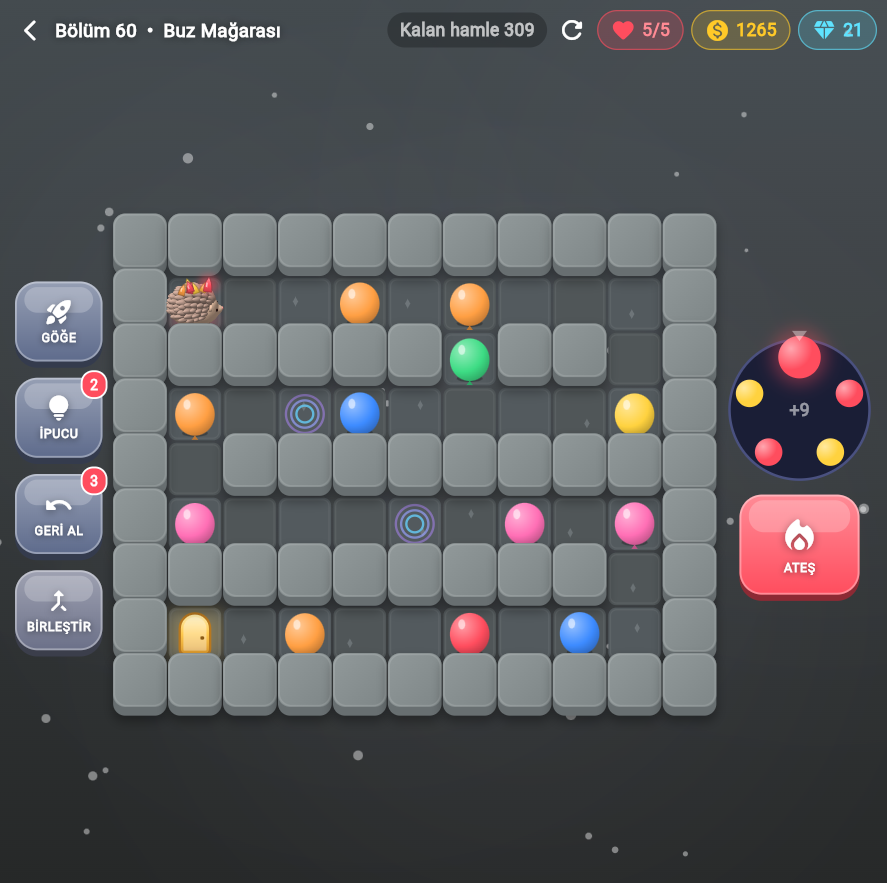
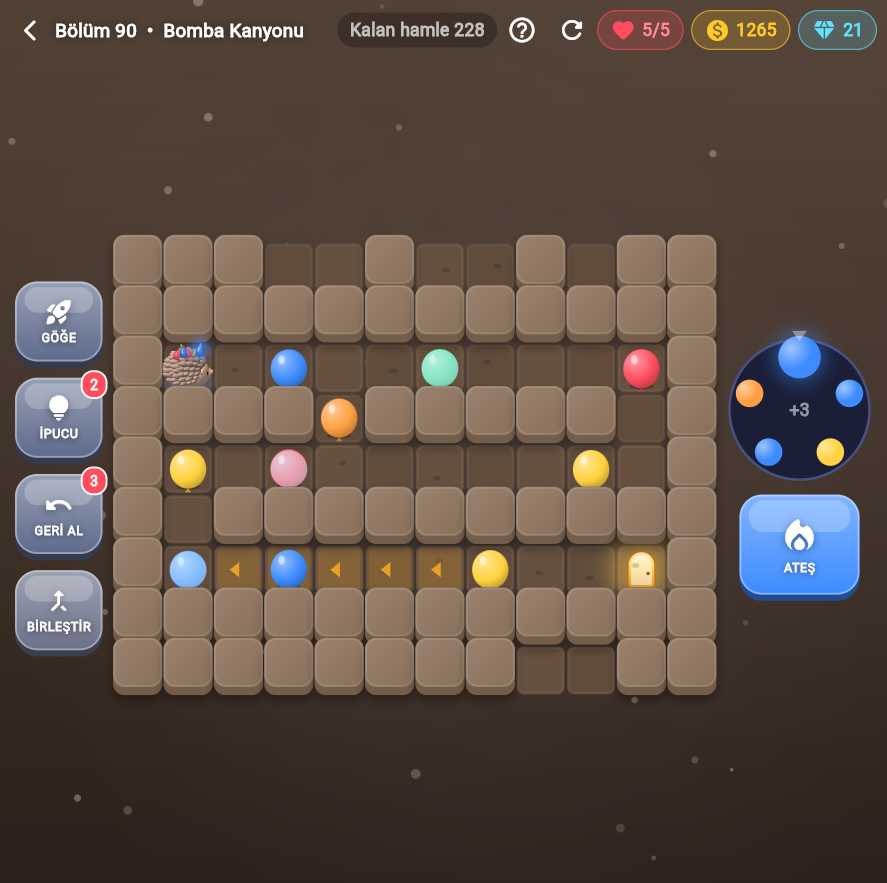

Jujiko
A cozy grid-based bubble puzzle game. Guide the hedgehog, pop bubbles of matching colors and clear the board in as few moves as you can.
Features
- 210 handcrafted, solver-verified levels across themed worlds
- Easy to learn, tricky to master – plan your shots ahead
- Undo, extra moves and revive power-ups when you get stuck
- Earn coins and gems as you progress
- Designed for landscape play on iPhone and iPad
Screenshots


